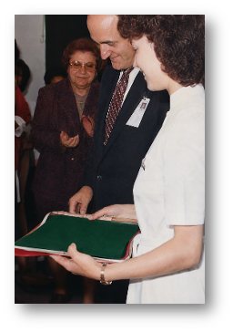
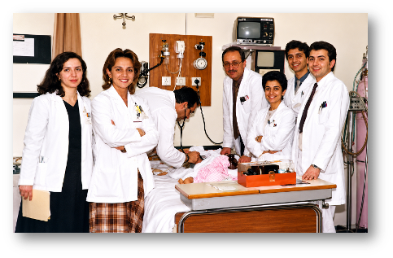
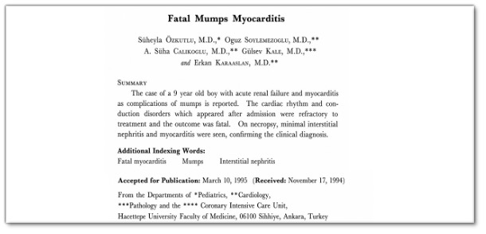
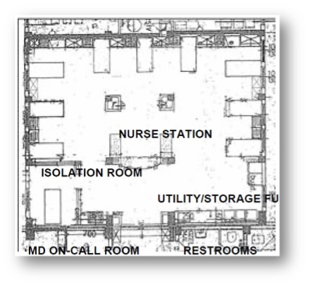
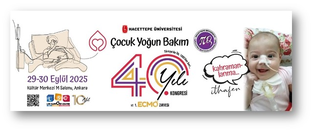
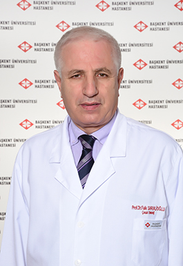
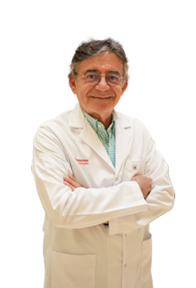

About Us
Founded in 1985 as the first pediatric intensive care unit (PICU) in Türkiye, the Hacettepe University Pediatric Intensive Care has evolved into a comprehensive academic and clinical hub that has played a pioneering role in the institutionalization of pediatric critical care nationwide. From its inception, the unit adopted a closed-model organizational structure, standardized admission criteria, and dedicated multidisciplinary staffing principles now widely recognized as essential for high-quality intensive care delivery.
Over time, the unit expanded its infrastructure and integrated advanced life-support technologies, including mechanical ventilation, continuous renal replacement therapies, and extracorporeal membrane oxygenation (ECMO) — introducing Türkiye's first ECMO program in 2007. In parallel, the development of formal subspecialty training programs, the establishment of the Life Support Center (2015), and sustained translational research strengthened its academic mission. Today the department functions as a national quaternary referral center with a total capacity of 23 intensive care beds across the general PICU and the pediatric cardiac intensive care unit (pCICU), integrating clinical excellence with education and research.
Four Decades in Numbers
History
The establishment and progressive development of the Pediatric Intensive Care Unit (PICU) at Hacettepe University represents far more than the history of a single clinical entity. Rather, it embodies the emergence, maturation, and institutionalization of pediatric critical care medicine in Türkiye, reflecting a trajectory aligned with international standards of care, education, and research. Across four decades, the unit has expanded its infrastructure and integrated advanced life-support technologies — including mechanical ventilation, continuous renal replacement therapies, and extracorporeal membrane oxygenation (ECMO) — while developing formal subspecialty training programs and sustained translational research that have collectively shaped the discipline at a national level.
1. The Foundational Period: 1985
The origins of pediatric intensive care at Hacettepe date back to 1985, when the first PICU in the country was established within the Hacettepe University İhsan Doğramacı Children's Hospital. The unit was inaugurated by the then Chief Physician of the Children's Hospital, Prof. Dr. Namık Çevik (Fig. 1). Initially designed with a capacity of six beds, the unit began operation equipped with a centralized oxygen system, pendants, monitors, and mechanical ventilators (Fig. 2). Architecturally, the unit featured an integrated structure organized around a central nursing station, with bed formations and logistical areas including storage rooms, nurses’ rooms, restrooms, and physicians’ offices. From its inception, the unit adopted a closed-model organizational structure, with dedicated personnel and clearly delineated clinical protocols — an approach that would later become a hallmark of modern intensive care systems.
The early clinical practices implemented in this period — including selective admission policies, the avoidance of terminal-stage admissions, and structured patient flow back to general wards once intensive care was no longer required — demonstrate a remarkably forward-thinking alignment with present-day critical care ethics and resource stewardship. Staff organization was designed in accordance with modern intensive care standards: under the supervision of the head nurse, care was provided with a nurse-to-patient ratio of 1:2. Over the years, the responsibility of head nursing was passed on successively, and the nurses who devotedly fulfilled this role from the establishment onward were, respectively: Hacer Ergin, RN (1985–1997), Gonca Alkan, RN (1997–2004), Şermin Özeski, RN (2004–2010), Arzu Bütün, RN (2010–2013), Gülten Kızılkaya, RN (2013–2015), Semra Çavuş, RN (2015–2017), and Neşe Kaplan, RN (2017–present); for the pediatric Cardiac Intensive Care Unit (pCICU), Emine Kahya, RN (2013–present). This continuous preservation and progressive strengthening of the unit’s organizational structure under a dedicated head nurse since its establishment constitutes a hallmark of the institution’s robust organizational foundation and enduring institutional continuity.
Under the operational directive prepared by Dr. Faik Sarıalioğlu, a closed-model management system was structured through the assignment of dedicated consultants and personnel exclusively for the unit. Second-year residents, a senior resident, and chief residents serving as consultants conducted the clinical operations. Dr. Erkan Karaaslan, Dr. Dilek Soysal, Dr. Funda Öztunç, and Dr. Güzide Turanlı served as the first consultant chief residents, while Dr. Oğuz Söylemezoğlu assumed the role of the first senior resident (Fig. 2). The first patients admitted to the unit were diagnosed with severe bronchiolitis, myocarditis, acute renal failure, and diabetic ketoacidosis. Academic productivity was embedded from the very beginning, as reflected by the autopsy and subsequent publication in the international scientific literature of one of the earliest patients admitted to the unit, who presented on the opening day with mumps myocarditis (Jpn Heart J 1989;30:109–114) (Fig. 3).
2. Infrastructure and Institutional Development: 1997
In 1997, the infrastructure of the unit underwent comprehensive development and structural enhancement, including the addition of an isolation room, transforming it into a 10-bed intensive care unit (Fig. 4). This transformation was carried out under the leadership of the Chief Physician of the Children's Hospital, Prof. Dr. Murat Tuncer, and represented a major milestone in the institutional development of the unit, laying the groundwork for the subsequent academic and technological advancements that would define the following decades.
3. Academic Vision and International Collaborations: 2001–2007
With the advent of the new millennium, Hacettepe Pediatric Intensive Care adopted the vision of becoming a national academic center beyond its role as a clinical service unit. In 2001, Dr. Benan Bayrakci was assigned to Johns Hopkins University — one of the world's leading centers — with the mission of bringing contemporary knowledge and expertise in pediatric intensive care to Hacettepe University. This strategic initiative was strongly supported by the Chair of the Department of Pediatrics, Prof. Dr. Gülsev Kale, and became a defining milestone in the academic development of pediatric intensive care medicine in Türkiye. The training of key faculty at leading global centers — most notably Johns Hopkins University — facilitated the transfer of advanced knowledge and clinical expertise into the national context.
Upon Dr. Bayrakci's return in 2002 and assumption of PICU leadership, the unit gained invasive and centralized monitoring capabilities, while mechanical ventilation practices became an integral and reliable component of critical care management. This period saw the integration of invasive monitoring, advanced mechanical ventilation strategies, continuous renal replacement therapies, and structured life-support training programs. Major subsequent developments included:
- 2003: Initiation of the home mechanical ventilation program — the pioneering service of its kind in Türkiye.
- 2004: Introduction of continuous venovenous hemodiafiltration (CVVHDF) applications.
- 2006: Structuring of the Pediatric Advanced Life Support (PALS) training program, with regular monthly courses that have since educated thousands of physicians and nurses.
- 2007: Establishment of Türkiye's first Extracorporeal Membrane Oxygenation (ECMO) program. The center was structured by Dr. Benan Bayrakci following his training at Johns Hopkins University, while the necessary institutional infrastructure was supported by the then Director of the Children's Hospital, Prof. Dr. Tezer Kutluk. This initiative marked a turning point in the integration of extracorporeal life support technologies into clinical practice in Türkiye.
Today, the ECMO patient cohort approaches 400 patients, with more than 600 ECMO days provided annually — a landmark achievement signifying the unit's transition into a high-complexity tertiary referral center.
The year 2007 also marked an important milestone in national academic leadership. The National Congress of Pediatric Emergency Medicine and Intensive Care was hosted at Hacettepe University with the participation of internationally recognized authorities in the field, consolidating the unit’s role as a convening center for the discipline. During the same meeting, the first American Heart Association (AHA)–certified Pediatric Advanced Life Support (PALS) Provider Course in Türkiye was organized, establishing an internationally accredited standard for pediatric resuscitation training in the country.
4. Academic Institutionalization and Subspecialty Training: 2009–2015
Recognition of pediatric intensive care as an academic discipline in Türkiye was achieved in 2009 through the TUKMOS studies conducted with the contributions of Dr. Bayrakcı, leading to its acceptance as a pediatric subspecialty field. Subsequently, in 2010, the Hacettepe University Division of Pediatric Intensive Care was formally established, and Associate Professor Dr. Benan Bayrakcı was appointed as the founding division chief, initiating Türkiye's first Pediatric Intensive Care Subspecialty Training Program. This initiation not only ensured the sustainability of expertise but also catalyzed the dissemination of pediatric critical care knowledge nationwide.
Dr. Selman Kesici became the first graduate of a pediatric intensive care training program in Türkiye, completing his fellowship in 2014. He returned to the same program as a faculty member in 2018 and has since played an active role in training future specialists, further reinforcing the unit’s clinical excellence and academic legacy. Over the following years, numerous specialists trained within the program contributed to pediatric intensive care medicine through academic and clinical positions both nationally and internationally. The first Joint Pediatric Intensive Care Training Program in Türkiye was conducted between 2013 and 2019 in collaboration with Ankara Children's Hematology Oncology Training and Research Hospital, further strengthening the nationwide impact of the “Hacettepe tradition.” In 2018, the Certified Pediatric Intensive Care Nursing Training Program was established in collaboration with the Turkish Ministry of Health, representing another major national contribution to intensive care science.
5. Modernization and Academic Expansion: 2011–2024
In 2011, the “PAYlaşım” meetings were initiated to facilitate the broader dissemination of knowledge and experience, and these meetings have continued annually with increasing participation. Continuous modernization efforts culminated in the relocation of the unit in 2013 to a technologically advanced, 16-bed facility, accompanied by measurable improvements in clinical outcomes during Dr. Benan Bayrakci’s tenure as Chief Physician of the Children's Hospital. The Standardized Mortality Ratio (SMR), considered one of the most important quality indicators in intensive care, declined to as low as 0.28 and has remained consistently at this level. With the establishment of the modern infrastructure in 2013, new opportunities emerged for ECMO implementation, and the ECMO program gained substantial momentum through the dedicated efforts of Dr. Selman Kesici and Dr. Murat Tanyıldız. Beginning in 2018, the academic staff also assumed responsibility for the management of an 8-bed pediatric cardiac intensive care unit (pCICU), further reinforcing the unit’s comprehensive critical care capacity.
In parallel with these clinical and educational advancements, the unit demonstrated a strong commitment to innovation and scientific production. In 2015, the Life Support Application and Research Center (LSC) was established to further advance scientific production and educational activities, becoming a major academic platform for research, simulation-based education, and the development of novel therapeutic approaches. Thanks to its infrastructure and highly qualified academic personnel, several innovative methods were introduced into the scientific literature, including the Zipper Method of Hacettepe, the PISA protocol for severe COVID-19–associated MIS-C, the SeLBA method, Rapid Sequence Apheresis, ECMO-supported mesenchymal stem cell therapy, hyperbaric oxygen organ preservation, the carbon monoxide–based apnea test, and Dialoxygenation. In 2024, the Life Support Trust Foundation was established to promote and sustain scientific research activities, while also providing structured social support for patients and their families.
6. Current Status
Today, the Hacettepe University Pediatric Intensive Care Division functions as a national quaternary referral center, integrating advanced clinical care, education, and research across a broad spectrum of critical illnesses, including extracorporeal life support, transplantation, intoxications, perioperative care, blood purification therapies, and trauma. With a total capacity of 23 intensive care beds across general and cardiac units, the department continues to play a defining role in shaping the future of pediatric critical care medicine in Türkiye and beyond. These activities are currently coordinated by Prof. Dr. Benan Bayrakcı, Associate Professor Dr. Selman Kesici, and Associate Professor Dr. Mehmet Çeleğen, with pediatric intensive care fellows, chief pediatric residents, pediatric residents, and medical interns actively participating in educational, research, and clinical activities.
Since its establishment, Hacettepe Pediatric Intensive Care has continued to evolve in line with the principles of leadership, scientific productivity, and clinical excellence, remaining one of the pioneering centers shaping the future of pediatric intensive care medicine. This sustained development was further commemorated in 2025 with the 40th Anniversary Congress (Fig. 5), organized with the participation of leading international authorities, during which the idea of documenting this historical trajectory as a guiding framework for newly established intensive care units was conceived.
Innovations & Protocols
Several innovative therapeutic and translational approaches were developed within the unit and introduced into the scientific literature:
Zipper Method of Hacettepe
A novel immunomodulation technique for severe neurological inflammatory disorders.
PISA Protocol
A treatment protocol for severe COVID-19-associated MIS-C.
SeLBA Method
Selective left bronchial aspiration for the recruitment of left lung atelectasis.
Rapid Sequence Apheresis
An apheresis technique for poisoning treatment.
ECMO-supported MSC Therapy
Mesenchymal stem cell therapy for hypoplastic lung disease.
Hyperbaric Organ Preservation
Hyperbaric oxygen preservation of donor organs prior to transplantation.
Carbon Monoxide Apnea Test
The Hacettepe CO-based apnea test procedure in ECMO patients.
Dialoxygenation
The use of dialysis membranes as oxygenators.
Historical Figures





Testimonials
Firsthand recollections from the clinicians who established and ran the first PICU in Türkiye.

Dr. Faik Sarıalioğlu
“Even a small dedicated intensive care unit was urgently needed.”

Dr. Ali Süha Çalıkoğlu
“An extraordinarily valuable, exciting, intense, and educational experience.”

Dr. Dilek Demirsoy
“We were trying both to establish the system and to provide genuine intensive care.”

Dr. Levent Saltık
“Monitors had arrived at Hacettepe for the first time — a major event for us.”

Dr. Bilge Kayıran
“Intensive care memories are unforgettable.”
Dr. Zehra Elibüyük
“Throughout our residency training, you remained a guiding figure for us.”
Acknowledgments
We respectfully acknowledge and express our profound gratitude to all individuals whose vision, dedication, and scholarly contributions have been instrumental in the establishment, advancement, departmental structuring, and historical documentation of the Pediatric Intensive Care Unit. We are particularly grateful to Professor Gülsev Kale, who initiated the establishment of the discipline, and to the Johns Hopkins–trained faculty whose expertise shaped its foundational structure, including Donald H. Shaffner, MD; James J. Fackler, MD; David G. Nichols, MD; Ivor D. Berkowitz, MD; and Joseph G. Dwyer, BS, RRT, alongside other esteemed contributors such as Gary Oldenburg, RRT, and Cristina Josephson, RRT.
We further acknowledge the invaluable contributions of Professor Timothy E. Bunchman, MD, for his mentorship in establishing the CRRT program, and extend our appreciation to Jeffrey Burns, MD, MPH; David P. Nelson; Orkun Baloğlu, MD; Joseph Carcillo, MD; and Ayşe Akcan Arıkan, MD, FAAP, FASN for their sustained commitment to education and academic collaborations. Special recognition is also due to Professor Tezer Kutluk for his pivotal support in the development of the ECMO program, in which Dr. Murat Tanyıldız also played a contributory role. Finally, we gratefully acknowledge Dr. Selman Kesici, whose contributions have further strengthened the unit’s clinical and academic legacy.
We also extend our sincere appreciation to Professor Namık Çevik and Professor Faik Sarıalioğlu for their pivotal roles in the establishment and subsequent development of the unit, and we are grateful to Dr. Levent Saltık, Dr. Bilge Kayıran, and Dr. Zehra Elibüyük for sharing their foundational experiences and testimonies. We further acknowledge all chief residents, head nurses — ranging from the first head nurse, Hacer Ergin, to the current head nurse, Neşe Kaplan — nurses, fellows, residents, and ancillary staff who contributed to the unit from its inception, as well as the successive presidents and members of the Turkish Society of Pediatric Emergency and Intensive Care Medicine, and the distinguished members of the PAYlaşım group.
References
- 1Pollack MM, et al. Pediatric intensive care outcomes. Crit Care Med.
- 2Marshall JC, et al. Intensive care organization and outcomes. Intensive Care Med.
- 3Bartlett RH. ECMO: historical perspective. ASAIO J.
- 4Kesici S, Tanyıldız M, Yetimakman F, Bayrakci B. A novel treatment strategy for severe Guillain-Barré syndrome: zipper method. J Child Neurol. 2019;34(5):277–283. doi:10.1177/0883073819826225.
- 5Bayrakci B, Kesici S. The zipper method of Hacettepe: a promising method of immunomodulation. J Child Neurol. 2020. doi:10.1177/0883073819900718.
- 6Saritas Nakip O, Kesici S, Bayrakci B. The zipper method as an emerging treatment option for severe Guillain-Barré syndrome related to COVID-19. Autoimmun Rev. 2021;20(7):102841. doi:10.1016/j.autrev.2021.102841.
- 7Ozturk Z, Bayrakci B. A novel technique with double catheter suctioning for clearing left lung atelectasis: selective left bronchial aspiration (SeLBA). Clin Respir J. 2019;13(11):728–732. doi:10.1111/crj.13082.
- 8Kesici S, Saritas Nakip O, Korgal N, Bayrakci B. A large pediatric cohort of colchicine intoxication: prognostic factors and experience with rapid sequence apheresis. Clin Toxicol (Phila). 2026. doi:10.1080/15563650.2026.2657988.
- 9Karacanoğlu D, Çeleğen M, Yavuz S, Katlan B, Kesici S, Bayrakci B. An inspiring horizon in congenital diaphragmatic hernia with mesenchymal stem cell therapy. Chest. 2022;161(6 Suppl):A548. doi:10.1016/j.chest.2022.04.082.
- 10Bayrakci B. Preservation of organs from brain-dead donors with hyperbaric oxygen. Pediatr Transplant. 2008;12:506–509. doi:10.1111/j.1399-3046.2007.00858.x.
- 11Bayrakci B. Preservation of organs from brain-dead donors with hyperbaric oxygen. In: Esquinas AM, ed. Applied Technologies in Pulmonary Medicine. Basel: S. Karger AG; 2011:114–118.
- 12Nakip OS, Kesici S, Terzi K, Bayrakci B. Apnea test on extracorporeal membrane oxygenation: step forward with carbon dioxide. J Extra Corpor Technol. 2022;54(1):83–87. doi:10.1182/ject-83-87.
- 13Karacanoğlu D, Bedir E, Nakip OS, Kesici S, Duran H, Bayrakci B. Dialoxygenation: a preclinical trial for transforming the artificial kidney into an oxygenator. ASAIO J. 2025. doi:10.1097/MAT.0000000000002260.